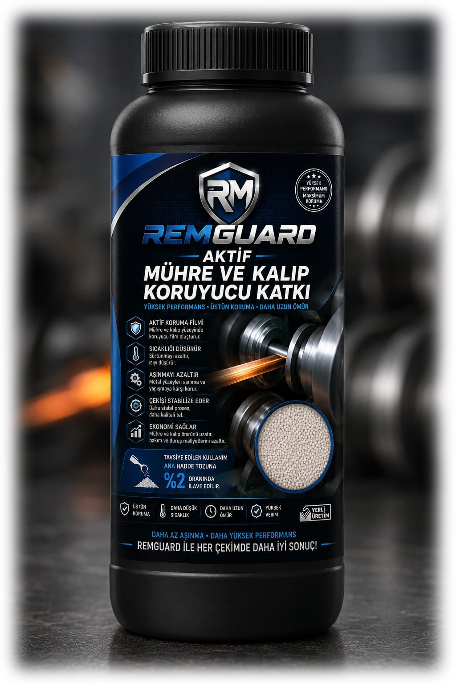

REMGUARD®
Tel çekme proseslerinde takım ve kalıp ömrünü desteklemek, üretim kararlılığını artırmak amacıyla geliştirilmiş proses koruma teknolojisidir.
Tel çekme proseslerinde takım ve kalıp ömrünü desteklemek, üretim kararlılığını artırmak amacıyla geliştirilmiş proses koruma teknolojisidir.

REMGUARD®, tel çekme proseslerinde takım ve kalıp yüzeylerinin korunmasına katkı sağlamak amacıyla geliştirilmiş yardımcı performans teknolojisidir.
Ana hadde tozunun yerine geçmez. İhtiyaç duyulan üretim şartlarında sistemi destekleyerek ekipman ömrünün korunmasına katkıda bulunur.
Tel çekme proseslerinde yüksek üretim hızları, ağır çalışma şartları ve sürekli üretim, takım ve kalıp yüzeylerinde zamanla aşınmaya neden olabilir.
REMGUARD®, bu etkileri azaltmaya yardımcı olmak, üretim sürekliliğini desteklemek ve ekipman ömrünü artırmaya katkı sağlamak amacıyla geliştirilmiştir.
Sürekli çalışan üretim hatlarında ekipman korunmasını destekler.
Artan mekanik yükler altında takım ömrünün korunmasına katkı sağlar.
Aşınma eğiliminin arttığı proseslerde ilave koruma desteği sunar.
Çalışma şartlarına bağlı aşınmanın azaltılmasına katkı sağlar.
Kalıp yüzeylerinin daha uzun süre verimli çalışmasını destekler.
Plansız ekipman değişimlerinin azaltılmasına yardımcı olur.
Bakım planlamasının daha kontrollü yürütülmesine katkı sağlar.
REMTRIBOCAL® ve REMTRIBONA® sistemleriyle birlikte çalışacak şekilde geliştirilmiştir.
Ekipman ömrünü destekleyen, proses odaklı performans teknolojisidir.
Takım ve kalıp ömrü yalnızca ekipman kalitesine bağlı değildir.
Doğru yağlama, doğru proses yönetimi ve doğru koruma teknolojileri birlikte değerlendirildiğinde sürdürülebilir üretim performansı elde edilir.
REMGUARD®, bu yaklaşımın bir parçası olarak geliştirilmiş modüler performans teknolojisidir.
REMGUARD®, tel çekme proseslerinde ihtiyaç duyulan ekipman koruma desteğini sağlayarak üretim sürekliliğinin ve proses verimliliğinin korunmasına katkıda bulunan REMKİM Performans Teknolojisidir.
Prosesinizi Birlikte Değerlendirelim